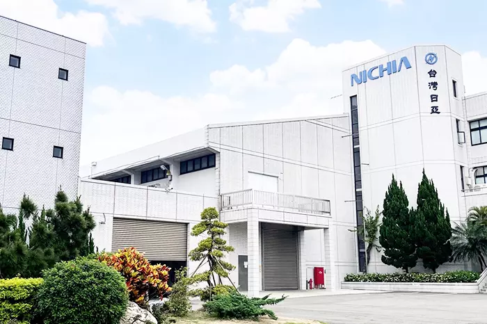
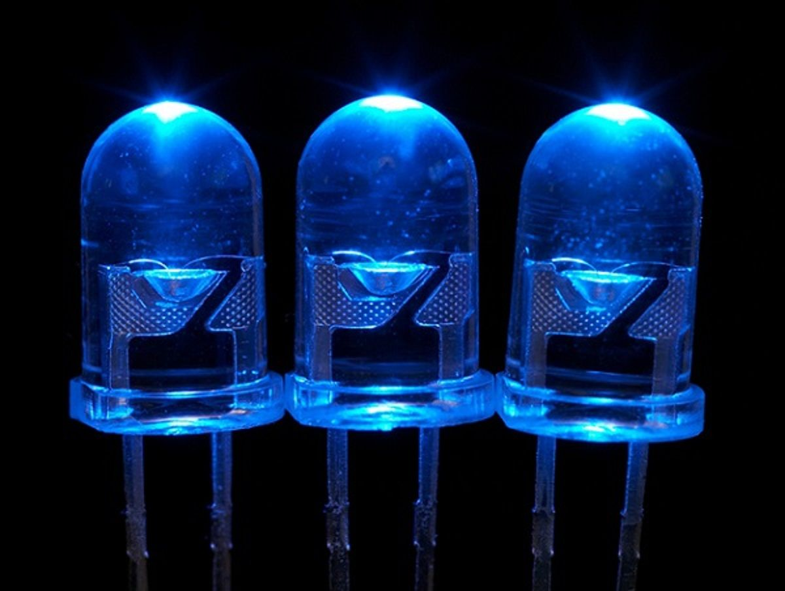
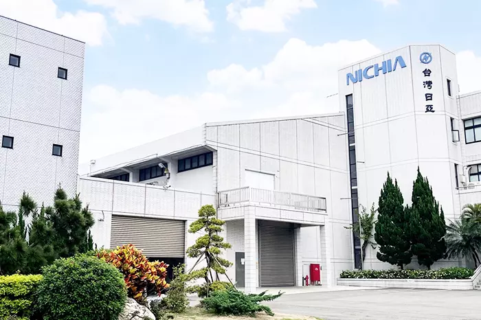
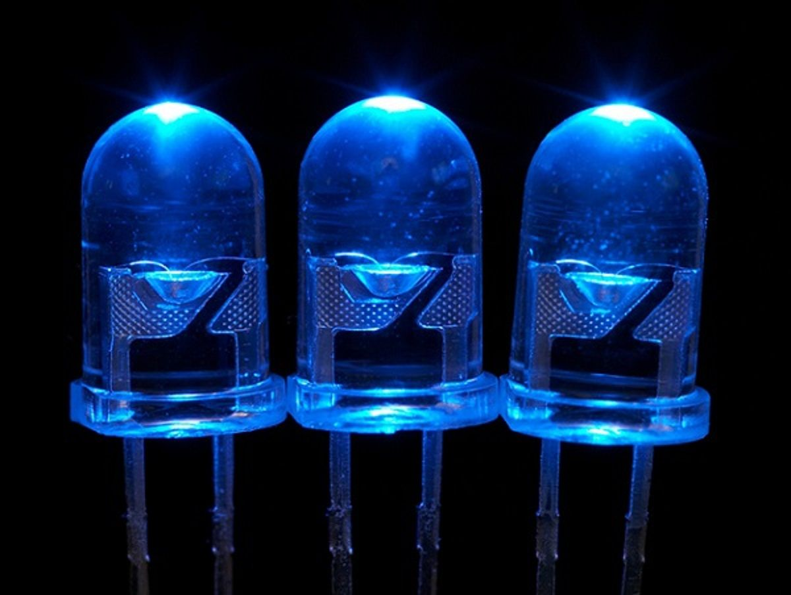

Nakamura a absolvit Universitatea din Tokushima în 1977 cu o diplomă de licență în inginerie electronică și a obținut o diplomă de master în același domeniu doi ani mai târziu. După aceea, s-a alăturat companiei Nichia Corporation, de asemenea, cu sediul în Tokushima. În timp ce lucra pentru Nichia, Nakamura a inventat metoda de producere a primului LED comercial cu nitrură de galiu (GaN) de înaltă luminozitate, a cărui lumină albastră strălucitoare, parțial convertită în galben printr-un strat de fosfor, este cheia iluminatului LED alb, care a intrat în producție în 1993.
Anterior, J. I. Pankove și colaboratorii săi de la RCA au depus eforturi considerabile, dar nu au reușit să producă un LED de GaN comercializabil în anii 1960. Problema principală era dificultatea de a obține un GaN de tip p puternic. Nakamura s-a bazat pe lucrările unui alt grup japonez condus de profesorul Isamu Akasaki, care a publicat metoda lor de a obține GaN de tip p puternic prin iradierea cu fascicul de electroni a GaN dopat cu magneziu; totuși, această metodă nu era potrivită pentru producția în masă. Nakamura a dezvoltat o metodă de recoacere termică mult mai potrivită pentru producția în masă. În plus, el și colaboratorii săi au elucidat fizica și au identificat hidrogenul ca fiind vinovatul, acesta pasivând acceptorii din GaN.
La acea vreme, mulți considerau că crearea unui LED de GaN era prea dificilă de realizat; astfel, Nakamura a avut norocul ca fondatorul Nichia, Nobuo Ogawa (1912–2002), să fie dispus să susțină și să finanțeze proiectul său GaN. Totuși, Ogawa senior a cedat președinția ginerelui său, Eiji Ogawa, în 1989. Compania, sub conducerea lui Eiji, i-a ordonat să suspende lucrările la GaN, susținând că consumau prea mult timp și bani. Nakamura a continuat să dezvolte LED-ul albastru pe cont propriu și în 1993 a reușit să producă dispozitivul.
În ciuda acestor circumstanțe, odată ce Nakamura a reușit să creeze un prototip viabil comercial, de 1000 de ori mai luminos decât LED-urile albastre de succes anterior, Nichia a urmărit dezvoltarea produsului comercializabil. Veniturile brute ale companiei au crescut de la puțin peste 20 de miliarde de yeni (aproximativ 200 de milioane de dolari) în 1993 la 80 de miliarde de yeni (aproximativ 800 de milioane de dolari) până în 2001, 60% din acestea fiind reprezentate de vânzările de produse LED albastre. Forța de muncă a companiei s-a dublat între 1994 și 1999, de la 640 la 1300 de angajați.
Nakamura a primit un doctorat în inginerie de la Universitatea din Tokushima în 1994. A părăsit Nichia Corporation în 1999 și a ocupat o poziție de profesor de inginerie la Universitatea din California, Santa Barbara.
 


